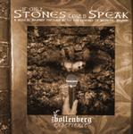

| Artist: | John Bollenberg Experience |
| Title: | If Only Stones Could Speak |
| Label: | Musea FGBG 4455 |
| Length(s): | 57 minutes |
| Year(s) of release: | 2002 |
| Month of review: | [03/2003] |
| 1) | If Only Stones Could Speak | 6.58 |
| 2) | Holy Blood | 7.13 |
| 3) | Minna | 3.50 |
| 4) | Ursus Bruggia | 3.39 |
| 5) | Cafe Vlissinghe | 5.25 |
| 6) | No Words | 6.06 |
| 7) | Anna From The Well | 6.10 |
| 8) | The Story Of Three | 8.50 |
| 9) | The Goodnight Knight | 9.20 |
Holy Blood has a rock opening, but the vocal part is more like early Spandau Ballet (that is, before they had all these hits with smooth tunes). The vocal part really has a kind of early eighties New Wave feel. This is typical symphonic rock with plenty of different keyboard solo's. The Yes style guitar is mainly used as a backdrop. Sometimes, the keyboardist becomes a bit too fiddly, but they never overdo it. Bollenberg moves now into a jazzy sounding introspective part. This part I really like, it brings over the bluesy emotion it is supposed to carry. Bollenberg sounds better when he sings loud.
With Minna we move into quieter and sadder waters. To Bollenberg's vocals are added those of Findlay and Josh from Mostly Autumn. A sad folk ballad with violin and harpsichord. Later on the Oldfield influence in the guitar work comes in again, lots of vibrato in it. Ursus Bruggia is another rather short track, this time even a bit more folky and again with some good memorable melodies. Again a strong ballad (in the original sense of the word). I am especially fond of the melodic chorus, which Bollenberg again sings at the top his lungs. It is funny how he sings Brugge in his own voice within an English sentence.
Cafe Vlissinghe has a fluty and synthy opening, careful and melodic. The music continues to have this folky medieval sheen lying over it. Kopecky's bass zooms and whines ikts way through the song, the synth solo's swing, but to my ears a bit too light and thin. A bit too frivolous for me, and on the other hand it is a bit more careful than it should be.
No Words is a heavy plodding track with synth and rhtyhm guitar injections and an occasional vocal effect. A rather bare bone affair, in which I get more the impression of instruments playing alongside each other instead of with each other. Halfway we get male church choirs singing in Latin. I like this part better. There is more coherence.
A the friendly dreamy ballad Anna From The Well, we come to The Story Of Three which is probably the best rock track on the album. Slightly Arabic in its melodies it is one of the few songs where the guitar really rips. Being careful is fine with me, but do not do it in a rock track. The Spanish guitar illustrates part of the storyand is a nice addition. Later on the slightly dissonant Oldfieldish guitar is to be heard again.
The final track is The Goodnight Knight, which is a bonus track. The reason is that the song does not fit in the Brugge story. It opens with fast acoustic guitar, the opening vocals are by Findlay. Again the medievalness of the music is evident, and it is not really surprising that Findlay and Josh are present here, because the music they ordinarily make comes quite close (although you will not find any real catchy rock tracks on this album). There is quite a strong Genesis feel present too, in the keyboards and in the guitar. This changes when the songs gets underway, and the pace and bass set in. Bollenberg adds some hazy vocals,